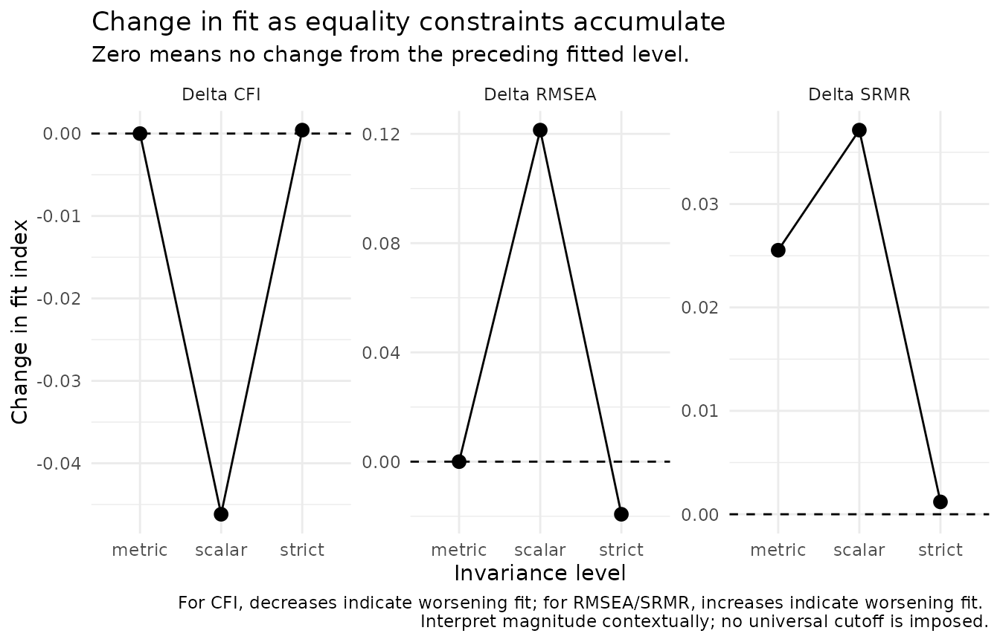
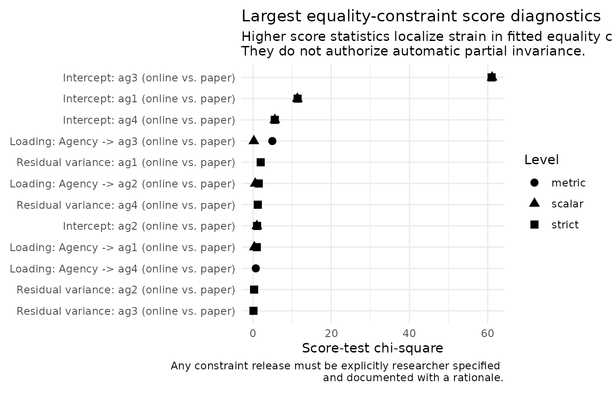
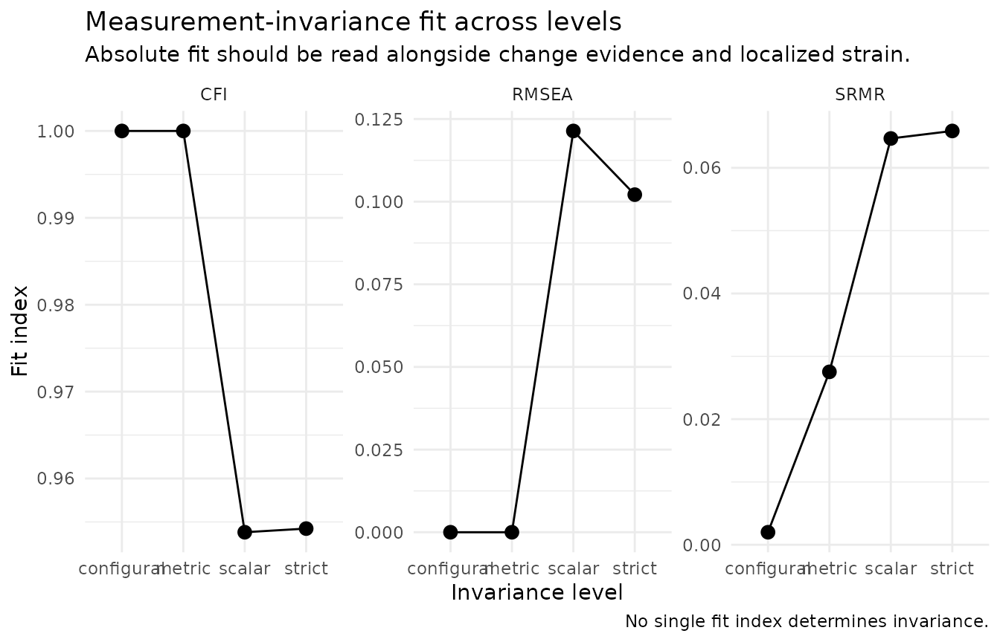

Measurement Invariance with nomologR
Source:vignettes/measurement-invariance.Rmd
measurement-invariance.RmdWhat invariance is for
Measurement invariance asks whether a construct is measured
comparably across groups or occasions. If it is not, a difference in
observed scores can reflect how an item functions in each group rather
than a difference in the construct itself. nomologR treats
invariance as graded evidence rather than a sequence of
automatic PASS/FAIL decisions.
Every fitted level retains:
- the generated
semTools::measEq.syntax()object and the exact lavaan syntax; - the fitted lavaan object;
- absolute fit and change in fit;
- nested-model comparison evidence where available;
- localized equality-constraint diagnostics;
- researcher-specified partial-invariance provenance.
A teaching example with a known answer
nomo_demo_network contains 800 responses collected in
two administration groups, online and paper.
Its population model builds in two features:
- the latent Agency mean is .25 SD higher in the
papergroup (a real construct difference); and - the intercept of item
ag3is .50 higher in thepapergroup (item bias:ag3is endorsed more on paper at the same level of Agency).
All loadings are equal across groups.
aggregate(
cbind(ag1, ag2, ag3, ag4) ~ group,
data = nomo_demo_network,
FUN = mean
)
#> group ag1 ag2 ag3 ag4
#> 1 online 3.98885 3.971875 3.974900 4.027750
#> 2 paper 4.23735 4.252500 4.640525 4.265525Every item mean is higher in the paper group, but
ag3 is higher by much more. Observed means alone cannot
separate the real latent difference from the item-level bias; that is
the job of the invariance sequence.
Continuous indicators
agency_model <- "Agency =~ ag1 + ag2 + ag3 + ag4"
inv <- nomo_invariance(
agency_model,
data = nomo_demo_network,
group = "group"
)
inv
#> <nomo_invariance>
#> Grouping variable: group (2 groups: online, paper)
#> Indicator treatment: continuous
#> Requested: configural -> metric -> scalar -> strict
#> Completed: configural -> metric -> scalar -> strict
#>
#> # A tibble: 4 × 11
#> level status constraints partial_requested cfi
#> <chr> <chr> <chr> <chr> <dbl>
#> 1 configural estimated none "" 1
#> 2 metric estimated loadings "" 1
#> 3 scalar estimated loadings, intercepts "" 0.954
#> 4 strict estimated loadings, intercepts, residuals "" 0.954
#> rmsea srmr delta_cfi delta_rmsea delta_srmr lrt_p
#> <dbl> <dbl> <dbl> <dbl> <dbl> <dbl>
#> 1 0 0.00200 NA NA NA NA
#> 2 0 0.0275 0 0 0.0255 1.46e- 1
#> 3 0.121 0.0647 -0.0462 0.121 0.0371 1.20e-13
#> 4 0.102 0.0659 0.000420 -0.0193 0.00120 4.83e- 1
#>
#> Localized equality-constraint diagnostics retained: 24
#>
#> Interpretation rule: fit changes and score diagnostics are evidence, not universal pass/fail rules, not automatic pass/fail decisions, and not automatic parameter-freeing rules.The conventional continuous sequence is:
configural -> metric -> scalar -> strict
fit <- nomo_table(inv, "fit")
fit[, c("level", "constraints", "cfi", "rmsea", "srmr", "delta_cfi", "delta_rmsea", "lrt_p")]
#> # A tibble: 4 × 8
#> level constraints cfi rmsea srmr delta_cfi delta_rmsea lrt_p
#> <chr> <chr> <dbl> <dbl> <dbl> <dbl> <dbl> <dbl>
#> 1 configural none 1 0 0.00200 NA NA NA
#> 2 metric loadings 1 0 0.0275 0 0 1.46e- 1
#> 3 scalar loadings, inte… 0.954 0.121 0.0647 -0.0462 0.121 1.20e-13
#> 4 strict loadings, inte… 0.954 0.102 0.0659 0.000420 -0.0193 4.83e- 1The configural and metric models fit closely, consistent with equal loadings. Adding intercept equality at the scalar level changes CFI by -0.046 and RMSEA by 0.121, and the likelihood-ratio test is very small (p = 1.2e-13). No single delta-CFI, delta-RMSEA, delta-SRMR, or chi-square rule is treated as universally decisive; the evidence is read together, in context.
plot(inv, type = "change")
Localizing strain
Global change in fit says that a set of constraints is strained. Score diagnostics help locate where.
strain <- nomo_table(inv, "local_strain")
strain[, c("level", "constraint_display", "score_x2", "df", "p_value")]
#> # A tibble: 24 × 5
#> level constraint_display score_x2 df p_value
#> <chr> <chr> <dbl> <dbl> <dbl>
#> 1 metric Loading: Agency -> ag3 (online vs. paper) 4.92 1 2.66e- 2
#> 2 metric Loading: Agency -> ag2 (online vs. paper) 1.03 1 3.10e- 1
#> 3 metric Loading: Agency -> ag4 (online vs. paper) 0.690 1 4.06e- 1
#> 4 metric Loading: Agency -> ag1 (online vs. paper) 0.0273 1 8.69e- 1
#> 5 scalar Intercept: ag3 (online vs. paper) 61.1 1 5.33e-15
#> 6 scalar Intercept: ag1 (online vs. paper) 11.3 1 7.68e- 4
#> 7 scalar Intercept: ag4 (online vs. paper) 5.56 1 1.83e- 2
#> 8 scalar Intercept: ag2 (online vs. paper) 0.977 1 3.23e- 1
#> 9 scalar Loading: Agency -> ag2 (online vs. paper) 0.546 1 4.60e- 1
#> 10 scalar Loading: Agency -> ag1 (online vs. paper) 0.317 1 5.74e- 1
#> # ℹ 14 more rows
plot(inv, type = "local_strain")
The largest scalar-level diagnostic is Intercept: ag3 (online vs. paper) (score chi-square 61.1), which matches the item bias built into the data.
Two cautions matter for real research:
- Score diagnostics never authorize an automatic parameter release. With many constraints, some diagnostics will look notable by chance; look at the smaller metric-level values above for an example.
- In real data you do not know the population model. A release chosen only because its diagnostic was largest is a post-hoc decision and should be reported as one.
Researcher-controlled partial invariance
release <- nomo_partial(
level = "scalar",
syntax = "ag3 ~ 1",
rationale = paste(
"The ag3 wording was expected to read differently on paper forms;",
"this expectation was documented before the analysis."
)
)
inv_partial <- nomo_invariance(
agency_model,
data = nomo_demo_network,
group = "group",
partial = release
)
nomo_table(inv_partial, "partial")
#> # A tibble: 1 × 4
#> release_id level syntax rationale
#> <chr> <chr> <chr> <chr>
#> 1 P1 scalar ag3 ~ 1 The ag3 wording was expected to read differently on…
fit_partial <- nomo_table(inv_partial, "fit")
fit_partial[, c("level", "partial_requested", "cfi", "rmsea", "delta_cfi", "lrt_p")]
#> # A tibble: 4 × 6
#> level partial_requested cfi rmsea delta_cfi lrt_p
#> <chr> <chr> <dbl> <dbl> <dbl> <dbl>
#> 1 configural "" 1 0 NA NA
#> 2 metric "" 1 0 0 0.146
#> 3 scalar "ag3 ~ 1" 1 0 0 0.582
#> 4 strict "ag3 ~ 1" 1 0 0 0.460With the ag3 intercept released, the remaining intercept
equalities are consistent with the data, and the latent mean difference
can be interpreted using the three invariant intercepts. The release is
carried forward to the strict level so that a parameter freed at one
level is not silently constrained again later.
nomologR records what was released and why. It does not
search until a model meets a preferred cutoff.
Ordered indicators
Ordered indicators require identification-aware sequences rather than merely substituting WLSMV for ML.
For four-or-more-category ordered indicators:
configural -> thresholds -> metric -> scalar -> strictFor three-category indicators, threshold equality is part of the metric step because it is needed for identification. For binary indicators, threshold, loading, and intercept restrictions cannot be treated as independent sequential tests under the implemented Wu–Estabrook approach, so the sequence begins:
configural -> strong -> strictwhere strong imposes thresholds, loadings, and
intercepts together.
The example below uses four five-category items from
nomo_demo_ordinal. The two “forms” are assigned by
alternating rows purely to demonstrate the ordered workflow; no
non-invariance was built into these groups.
ordinal_items <- nomo_demo_ordinal[, c("a1", "a2", "a3", "a4")]
ordinal_items$form <- rep(c("form_1", "form_2"), length.out = nrow(ordinal_items))
inv_ord <- nomo_invariance(
"A =~ a1 + a2 + a3 + a4",
data = ordinal_items,
group = "form",
ordered = c("a1", "a2", "a3", "a4")
)
nomo_table(inv_ord, "categories")
#> # A tibble: 4 × 2
#> item categories
#> <chr> <int>
#> 1 a1 5
#> 2 a2 5
#> 3 a3 5
#> 4 a4 5
fit_ord <- nomo_table(inv_ord, "fit")
fit_ord[, c("level", "constraints", "cfi", "rmsea", "delta_cfi")]
#> # A tibble: 5 × 5
#> level constraints cfi rmsea delta_cfi
#> <chr> <chr> <dbl> <dbl> <dbl>
#> 1 configural none 0.992 0.0743 NA
#> 2 thresholds thresholds 0.997 0.0372 0.00439
#> 3 metric thresholds, loadings 0.997 0.0331 0.0000218
#> 4 scalar thresholds, loadings, intercepts 0.998 0.0227 0.00150
#> 5 strict thresholds, loadings, intercepts, residuals 1 0 0.00193Tables and figures
plot(inv, type = "fit")
nomo_table() returns ordinary tibbles
("fit", "categories", "partial",
"local_strain", "decision_log"), and plots are
ordinary ggplot objects, so researchers keep direct control over
reporting. The same evidence flows into nomo_report() when
invariance is part of a guided workflow.
Research basis
Multiple-group factor analysis originates with Jöreskog (1971), and
the configural–metric–scalar–strict hierarchy with Meredith (1993) and
Vandenberg and Lance (2000). A decrease in CFI of .01 became a widely
used rule after Cheung and Rensvold (2002); later work showed that
sensitivity of change-in-fit indices depends on sample size and model
context (Chen, 2007; Putnick & Bornstein, 2016), which is why
nomologR reports several indices without a universal
cutoff. Ordered-indicator sequences follow Wu and Estabrook (2016) as
implemented in semTools (see also Svetina et al., 2020).
Partial invariance follows Byrne, Shavelson, and Muthén (1989). Full
references are in ?nomo_invariance and the research basis article.